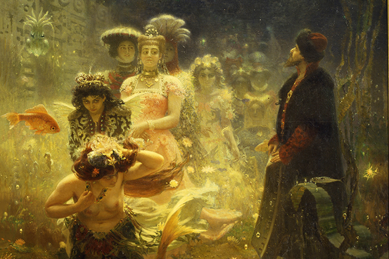
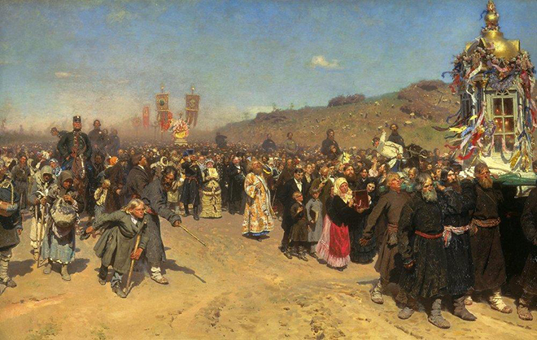

ART EDUCATION
Пора начать разбираться в искусстве
Илья Ефимович Репин
Начало творческого пути
Илья Ефимович Репин родился 5 августа 1844 в небольшом украинском городе Чугуеве, что под Харьковом. Его отец был отставным военным, в прошлом немало поколесил по стране, а последним пристанищем для него оказалась Украина. Начальное образование мальчик получил от матери, которая устроила в своём доме некое подобие школы, сама учила детей письму и чтению, а приглашенный местный дьяк преподавал арифметику. Рисовать и лепить фигурки животных Илья начал очень рано. Это было его единственное любимое занятие. Позже юноша познакомился с иконописцем И.М. Бунаковым, у которого проучился около двух лет.
К шестнадцати годам Илья уже достиг определённого мастерства в иконописи, покинул своего учителя и начал работать в кочевых иконописных артелях. Он мог самостоятельно выполнить большие настенные образы, его работами были довольны и артельщики, и заказчики. Спустя некоторое время наниматели даже стали приезжать за «богомазом» Репиным со всей Украины. Своим неплохим заработком художник существенно поддерживал окончательно обедневшую к тому времени семью. Мечтая о поступлении в Петербургскую Академию художеств, молодой Репин выписал себе альбом «Северное сияние», в котором печатались картины русских художников, а также достал устав Академии с новой вступительной программой. Поездка в столицу для него была важным событием.

Осенью 1863 на заработанные деньги Илья Репин уехал в Петербург. По совету столичных знакомых он сразу записался в Рисовальную школу Общества поощрения художников, располагающуюся в здании Биржи, а также показал свои рисунки в Академии художеств. Однако там его ждало разочарование: молодому живописцу указали на недостатки в его умениях и порекомендовали заняться техникой рисунка. На втором году обучения в Рисовальную школу пришёл преподавать Иван Крамской. Молодого живописца продолжала манить Академия художеств, но для поступления ему не хватало значительных знаний. Также можно было поступить за деньги вольным слушателем, но у Репина не было таких денег.
Вскоре мечта Репина сбылась: он нашёл покровителя в лице Фёдора Ивановича Прянишникова, члена Общества поощрения художников и коллекционера живописи, и в конце января 1864 стал вольнослушателем Академии художеств. Учиться ему было сложно, но интересно. Через несколько месяцев он решился на переаттестацию и был зачислен в действительные ученики. Молодой художник брался за любую работу, чтобы хоть как-то существовать, тщательно выполнял все задания, писал много эскизов, выполнял все требования Академии и даже написал картину на вольную тему.
«Подготовка к экзамену»
- проникнутая духом студенчества ироничная и озорная работа Репина.Подружившись с Крамским, Репин стал часто бывать в его «Артели четырнадцати». Из сообщества бунтарей - художников вскоре родилось Товарищество передвижников.Увлекаясь народовольческими идеями, Репин зарисовал то лицо террориста Каракозова, то образы бурлаков на берегу Волги. Однако дипломную работу в Академии художеств требовалось написать строго на один из предложенных комиссией евангелийских сюжетов.
«Воскрешение дочери Иаира»- монументальное полотно, в котором нашли не только все академические требования, но и личные переживания мастера. Работая над картиной, он вспоминал, как родители оплакивали его умершую маленькую сестру, а их дом наполнился скорбью. За эту работу Илья Репин получил большую золотую медаль, звание художника первой степени и право на шестилетнюю бесплатную пенсионерскую поездку за границу.
Влияние идей
До отъезда Репина 29 ноября 1871 в Петербурге открылась первая передвижная выставка и, помогая художникам-передвижникам развешивать картины, он увидел работы В. Перова, И. Прянишникова, А. Саврасова, оказавшие на него определённое влияние.
С 1870 по 1873 живописец работал над новой картиной (из-за этого художник попросил отсрочить пенсионерскую поездку).
«Бурлаки на Волге»
- полотно было представлено на годичной академической выставке и сразу получило неоднозначную оценку.
Зарубежный период
Весной следующего года Илья Репин отправился в путешествие по Европе, посетил Австрию, Италию и Францию. В Париже познакомился с импрессионистами, работы Эдуарда Мане вдохновили на создание полотна «Парижское кафе». Но чуждая культура и манера модного во Франции импрессионизма раздражали русского реалиста. Рисуя картину «Садко», на которой герой пребывает в чужом подводном царстве, Репин, похоже, представлял себя.

Возвратившись из Европы на родину, Илья Репин 11 месяцев жил в родном Чугуеве. В Москву переехал поздней осенью 1877 года и, примкнув к передвижникам, написал «Царевну Софью». Для погружения в материал Репин поселился рядом с Новодевичьим монастырем и трудился над полотном год, изучая архивы, посещая театральные мастерские и музеи. Полотно оценили неоднозначно, безоговорочное восхищение выразил лишь Крамской.

Вскоре художник женился и отправился в пенсионерскую поездку за границу. Там он познакомился с вдовой композитора А. Серова и по её просьбе позже Репин давал уроки и брал с собой на этюды будущего талантливого портретиста Валентина Серова.
Признание столицы и зрелое творчество
Репин после возвращения написал много портретов и картин на исторические сюжеты и бытовые сцены. Все последние работы вызывали у его друзей восторженные отзывы. 1880-е годы — пора расцвета таланта художника. В 1885 году была создана картина «Иван Грозный и сын его Иван 16 ноября 1581 года», отмечающая наивысшую точку его творческого горения и мастерства. В области исторической живописи его привлекала возможность раскрыть эмоциональную выразительность предложенной ситуации. Стихией художника была современность, и, даже создавая картины на темы легендарного прошлого, он оставался мастером животрепещущего настоящего, сокращая дистанцию между зрителем и героями своих произведений. По мнению искусствоведа В. В. Стасова, творчество Репина — «энциклопедия пореформенной России». Последние 30 лет жизни Репин провёл в Финляндии, в своём имении Пенаты в Куоккале. Он продолжал работать, хотя уже не так интенсивно, как прежде. В последние годы он обратился к библейским сюжетам. В Куоккале Репин написал мемуары, ряд его очерков вошёл в книгу воспоминаний «Далёкое близкое».